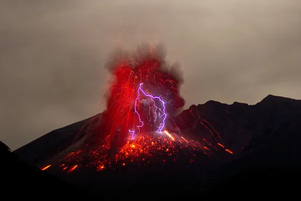

Kagoshima: Imo shochu

Photo: Marc Szeglat on Unsplash
Kagoshima, in southern Kyushu, is the centre of sweet potato shochu.
How it's made
Honkaku (authentic) shochu is distilled only once, keeping the flavour of its base ingredient.
Rice or sweet potato koji is fermented with yeast and water, then steamed sweet potatoes are added for a second fermentation. The mash is distilled only once, usually in a pot still, often under normal pressure for fuller flavour.
History
Sweet potatoes arrived in southern Kyushu in the 1700s and soon became the base of the local shochu. Today Kagoshima prefecture has more than 100 shochu distilleries, most making imo (sweet potato) shochu.
Ageing and label terms
Most imo shochu is rested for a few months in steel tanks or clay pots and sold unaged. Some is aged for years in pots or oak, but 'koshu' (old shochu) is the exception.
Styles
Fragrant, earthy imo shochu is the main style; aroma depends on the potato variety and on the koji (white, black or yellow). Black koji gives a richer, bolder taste.
Rules and protected names
'Satsuma' is a geographical indication for sweet potato shochu made in Kagoshima (excluding Amami) from local sweet potatoes and water. Honkaku shochu must be single distilled with no additives; most is sold at 20–25%.
How to serve and classic cocktails
Drink it oyuwari, mixed with hot water, which lifts the aroma; also on the rocks, with cold water or as a chuhai highball with soda.
With food
Pairs with Kagoshima food such as kurobuta black pork, satsuma-age fish cakes, chicken and grilled dishes.
Good to know
Because it is lower in strength than whisky, shochu is often drunk through a meal like wine. Many locals mix it with water a day ahead so the two blend smoothly.
Producers
- Satsuma Shuzo
- Hamada Shuzo
- Mori Izo
Bottles to try
Satsuma Shuzo Satsuma Shiranami
Sweet potato, chestnut, earthy and gently sweet.
Strength: 25% · Age and cask: Rested, not oak-aged
A classic imo shochu from Kagoshima, distilled once from local sweet potatoes fermented with koji. Single distillation keeps the full flavour of the potato.
Serve: With hot water (oyuwari), on the rocks or with water
Hamada Shuzo Daiyame
Surprisingly floral: lychee, sweet potato, flowers and a soft, clean finish.
Strength: 25% · Age and cask: Unaged honkaku shochu
A sweet potato shochu from Kagoshima made from potatoes that are ripened for a while after harvest. This brings out a lychee-like aroma that is unusual for imo shochu.
Serve: On the rocks or with soda
Satsuma Shuzo Kannoko
Light and mellow barley shochu with vanilla, honey and soft oak.
Strength: 25% · Age and cask: Matured in white oak casks
A barley shochu from Kagoshima aged in white oak, which gives it a pale gold colour and rounded flavour; one of the best-known oak-aged shochu in Japan.
Serve: On the rocks, with soda, or mixed with water
Nishi Shuzo Tominohozan
Fresh citrus and sweet potato with a light, clean finish.
Strength: 25% · Age and cask: Unaged
An imo shochu from Kagoshima made from Kogane Sengan sweet potatoes with yellow koji, the type used for sake, which gives it a fruity, delicate style unusual for potato shochu.
Serve: On the rocks or mixed with hot water
Shiratama Jozo Maou
Smooth and gentle: roasted sweet potato, chestnut and a light floral note.
Strength: 25%
A cult imo shochu from Kagoshima, made from local Satsuma sweet potatoes with a koji ferment and single pot distillation. Hard to find even in Japan, it is one of the famous 3M shochu.
Serve: On the rocks or with hot water
Satoh Shuzo Satoh Kuro
Earthy roasted sweet potato with black tea and dark berry notes.
Strength: 25% · Age and cask: Unaged
A cult imo shochu from Kirishima in Kagoshima, made from Koganesengan sweet potatoes and rice fermented with black koji, which gives a deeper, fuller flavour than white koji.
Serve: On the rocks or with a little hot water
Mitake Shuzo Mitake
Soft, sweet potato shochu with earthy, creamy and lightly floral notes.
Strength: 25% · Age and cask: Unaged
An imo (sweet potato) shochu from a small distillery on Yakushima, a forested island in Kagoshima prefecture, made with the island's very soft water.
Serve: With hot water (oyuwari) or on the rocks
Ohkuchi Shuzo Kuro Isanishiki
Full and earthy, with roasted sweet potato, chestnut and a rich umami depth.
Strength: 25% · Age and cask: Unaged
A classic imo shochu from Isa in northern Kagoshima, fermented with black koji, which gives a fuller, more savoury style than the more common white-koji shochu.
Serve: With hot water (oyuwari) or on the rocks
More anise & others regions
Explore all spirits in the interactive guide
The Wine Reference newsletter
New wines, stories and career guides, one email a week at most.
Over 18s only. Unsubscribe any time with one click. Your email is stored securely by Kit and never shared.
Support The Wine Reference
This guide is free, with no paywall. If it helped you choose a bottle, you can buy me a glass and keep it growing.
🍷 Buy me a glass